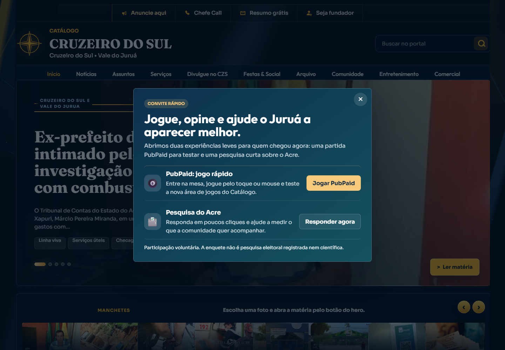

Rodada privada de cotas comerciais
Catálogo CZS Jornal
Um jornal local digital já funcionando em Cruzeiro do Sul e Vale do Juruá. A cota entra para manter a operação viva, ampliar audiência, vender publicidade regional e transformar tecnologia própria em receita.

O que está sendo comprado
Uma posição inicial em uma mídia local que já saiu do zero.
A oportunidade não é financiar uma ideia solta. O ativo já tem site público, canal social, arquivo editorial, operação de WhatsApp, módulos comerciais e tecnologia própria. A entrada agora compra participação comercial antes da audiência e dos patrocínios ficarem mais caros.
Resumo para decisão rápida
- Site online e demonstrável para qualquer comprador.
- Instagram ativo com seguidores e volume de posts.
- 9 mil views informadas na ativação inicial.
- Estrutura técnica maior que a de um jornal local comum.
- Receita possível em cotas, anúncios, serviços e classificados.
Prova de funcionamento depois do lançamento
O sistema funcionou, publicou e gerou sinais de mercado.
| Prova | Resultado | Por que importa para o cotista |
|---|---|---|
| Site público | Catálogo CZS online no Render, capturado e verificado. | O produto pode ser mostrado hoje para comerciante, político, empresa e apoiador. |
| 552 seguidores, 1.142 seguindo e 181 posts verificados publicamente. | Existe canal visual para distribuir notícia, oferta, anúncio e prova social. | |
| Ativação inicial | 9.000 views informadas em cerca de 3 dias. | Mostra que o tema local consegue atenção rápida quando é distribuído. |
| Produção de conteúdo | 24 posts de feed, 12 stories de notícias e 11 stories comerciais em uma rodada. | O projeto tem capacidade operacional, não apenas layout. |
| Inventário | 480 notícias, 12 módulos e 49 itens/listagens de serviços. | A monetização pode vir de jornal, guia, anúncio, serviço e vitrine comercial. |
Mercado de base
O anúncio local vale porque fala com gente perto.
Cruzeiro do Sul tem população estimada pelo IBGE em 98.382 pessoas em 2024. Para o anunciante regional, isso vale mais que tráfego genérico: a audiência mora, compra, vota, se desloca, trabalha e consome serviços no mesmo território.
Base pública: IBGE, população estimada 2024 do município de Cruzeiro do Sul (AC).
Capacidade tecnológica
Por trás do jornal existe uma plataforma.
Backend próprio
Notícias, arquivo, comentários, assinaturas, analytics, admin, pesquisas, serviços e PubPaid.
Analytics e CSV
Visitas, permanência, dispositivos, origem, relatórios de acessos, comentários, votos e assinaturas.
Agentes e revisão
Rotinas de captura, saúde editorial, revisão de imagens, guardas de linguagem e equipe de revisão local.
Serviços e classificados
Catálogo de serviços, vendas locais, anúncios, guias, vitrines e pacotes para empresas.
Jogos promocionais
Phaser, chess.js, PVP, torneios, QR/Pix e experiências patrocináveis para engajamento.
WhatsApp e Instagram
Distribuição social, status, stories, feed, grupos validados e funil de contato direto.
Projeção comercial
O que a arrancada pode virar por mês.
| Cenário | Views/mês projetadas | O que já permite vender |
|---|---|---|
| Conservador | 31.500 | Cotas pequenas, stories, banners e posts de apoio local. |
| Realista | 54.000 | Patrocínio mensal, editoria patrocinada e pacotes para empresas. |
| Agressivo | 90.000 | Cota premium, mídia kit regional e negociação por categoria. |
Oferta objetiva
Cotas comerciais para manter e acelerar o CZS.
Cota Apoio
R$ 250- Nome/marca em apoiadores.
- 1 menção em story.
- Relatório simples da rodada.
Cota Fundador
R$ 500- Destaque por 30 dias.
- 3 stories ou chamadas.
- Prioridade em anúncio local.
Cota Comercial
R$ 1.500- Pacote de visibilidade.
- Conteúdo institucional.
- Relatório de alcance.
Cota Crescimento
R$ 5.000- Negociação direta de participação.
- Plano de retorno mensal.
- Prioridade em novas frentes.
Participação societária, se houver, deve ser formalizada em contrato próprio. Esta página apresenta a proposta comercial e operacional do ativo.
Fechamento
O Catálogo CZS Jornal precisa de cotas agora para continuar crescendo.
A operação já mostrou que funciona: site no ar, rede social ativa, audiência inicial, produção de conteúdo e tecnologia própria. A próxima etapa é transformar essa base em receita recorrente para manter o jornal vivo, ampliar cobertura e entregar resultado para anunciantes regionais.
Compra racional da cota
- Entrada cedo em ativo local já lançado.
- Exposição em mídia regional em crescimento.
- Apoio direto à continuidade da operação.
- Possibilidade de retorno em publicidade, influência local e receita futura.